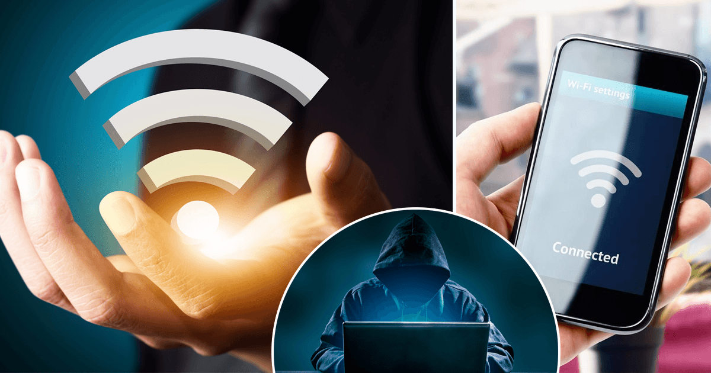

Злоумышленники также могут создавать поддельные точки доступа Wi-Fi со схожими названиями. Пользователи, не подозревая об опасности, могут подключиться к такой точке и стать жертвами атаки вида «человек посередине».
1.Выбор локации: Злоумышленники отдают предпочтение местам с общественным Wi-Fi, таким как аэропорты, отели, станции метро, кафе и рестораны. В таких местах множество точек доступа с одинаковыми или схожими именами не вызывает подозрений.
2.Настройка фальшивой точки доступа: Преступник использует мобильное устройство для создания новой точки доступа Wi-Fi, задавая идентификатор беспроводной сети.
3.Привлечение пользователей к фальшивой точке доступа: Злоумышленники усиливают сигнал фальшивой сети, чтобы привлечь потенциальных жертв, которые склонны выбирать сеть с наибольшей мощностью сигнала.
4.Создание поддельной страницы авторизации: Для доступа к публичной сети пользователям часто требуется ввести свои личные данные на странице авторизации. Мошенники создают фальшивую страницу, имитирующую легитимную, с целью получения данных пользователей.
5.Кража данных: Все пользователи, подключившиеся к фальшивой точке доступа, становятся жертвами атаки «человек посередине» (Man-In-The-Middle). Преступники получают доступ ко всей онлайн активности пользователя, включая вход в учетные записи, просмотр социальных сетей и банковские операции.
В одном московском кафе несколько лет назад был зафиксирован случай создания поддельной точки доступа. Мошенник, находясь в кафе создал сеть под названием, совпадающим с настоящей сетью кафе, но в конце добавил букву «I». Посетители, не обращая внимания на это отличие, подключались к фальшивой сети и использовали его код доступа в Интернет. За несколько часов мошенник получил доступ к десяткам логинов и паролей, а также данные для доступа к банковским приложениям пользователей сети, в числе пользователей находилось несколько сотрудников кафе.
В современном цифровом мире защита от атак типа "человек посередине" (МІТМ) является критически важной задачей. Для минимизации риска подобных атак рекомендуется принять ряд мер:
1. Использовать защищенные протоколы: Предпочтение следует отдавать протоколам HTTPS и TLS, которые обеспечивают шифрование данных во время передачи между пользователем и сервером.
2.Применение VPN от проверенного провайдера: VPN-соединение гарантирует передачу трафика в зашифрованном виде, повышая уровень безопасности.
3.Регулярное обновление программного обеспечения: Своевременная установка обновлений устраняет уязвимости, которые могут быть использованы злоумышленниками для проведения атак MITM.
4.Проверка сертификатов безопасности: Необходимо убедиться в подлинности и надежности сертификата сайта, к которому осуществляется подключение.
5.Использование антивирусного программного обеспечения: Надежный антивирус может предотвратить некоторые виды атак МІТМ.
6.Осторожность при работе в публичных Wi-Fi сетях: Не рекомендуется передавать конфиденциальные данные, авторизоваться в учетных записях или осуществлять финансовые операции при подключении к открытым Wi-Fi сетям.
© Долженко Виктория | ГБОУ Школа 1347